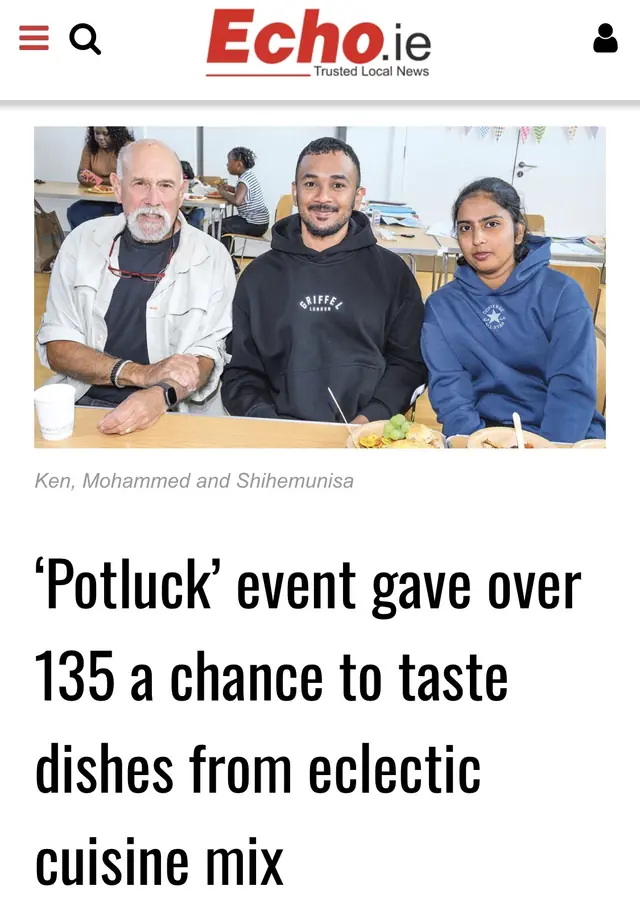
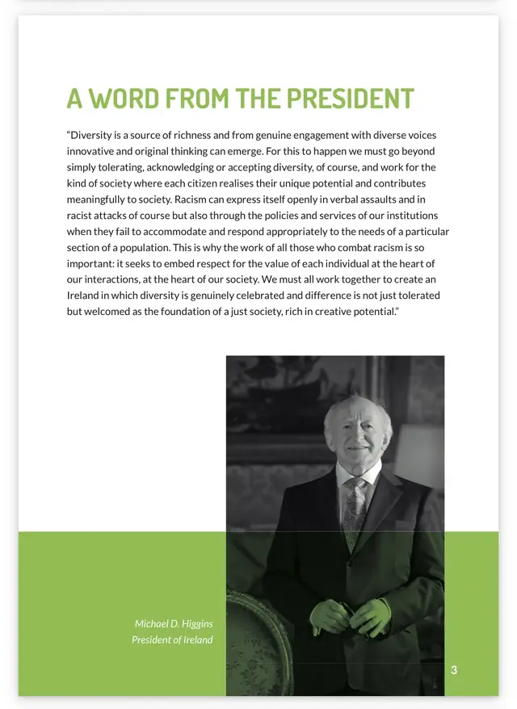
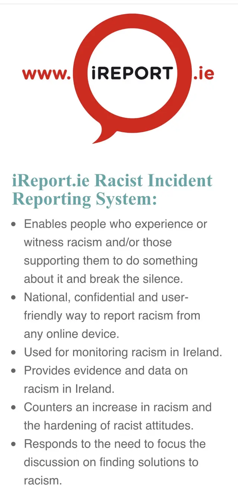

Our purpose
We encourage participation across the community, advocate for equal access to local services, and work to make Saggart and Citywest safe, welcoming and vibrant places to live. We respect people’s dignity, identities and right to participate. The group has no political affiliation.
How we work
Resident-led
People living in Saggart and Citywest can contribute ideas and initiate activities that advance the group’s purpose.
Inclusive and respectful
Participation should uphold dignity, equality and inclusion, challenge racism and discrimination, and keep the interests of the whole community at its centre.
Open and accountable
The committee seeks consensus, holds an AGM, keeps financial records and uses safeguards for conflicts of interest.
Safe and welcoming
S&CT is committed to protecting children, young people and adults at risk, taking concerns seriously and working with relevant agencies where needed.
Community in action

Read The Echo’s coverage of the community potluckIn August 2026, Saggart & Citywest Together brought more than 135 people together for a community potluck at Saggart Schoolhouse Community Centre. Local and newer residents shared food from a wide range of cultures, supported by collaboration with South Dublin Volunteer Centre, Saggart Tidy Towns, Saggart Schoolhouse Community Centre, South Dublin County Council and South Dublin County Partnership.
A place shaped by movement
From the early community around Teach Sacra, through farming, the Swift Brook Paper Mill and the Blessington steam tram, Saggart has always been connected to wider change. Citywest, the N7 and the Luas brought another period of rapid growth. Today, people with deep local roots and people who have made their home here more recently—whether from elsewhere in Ireland or from other countries—share the area.
Understanding this history helps us discuss change in a grounded, respectful way and work together for a safe, welcoming and vibrant community.
How we challenge racism

We understand racism as more than individual prejudice: it can also operate through practices, policies, structures and institutions, whether intentionally or unintentionally. We aim to use accurate, inclusive language; avoid stereotypes and over-generalisations; centre the dignity and lived expertise of people affected by racism; and support equal participation by minority ethnic communities and other racially minoritised people.

If you experience or witness racism in Ireland, you can confidentially record it through iReport.ie and find practical guidance through INAR’s Responding to Racism Guide. Call 999 or 112 where there is an immediate danger.
Editorial approach
Organisational information is based on S&CT’s confirmed constitution and community migration brief. Language about racism, ethnicity, migration and inclusion follows current guidance and framing published by the Irish Network Against Racism (INAR), including its emphasis on dignity, accurate terminology, anti-racism and the individual, institutional and structural dimensions of racism. Local history and civic content uses public information from South Dublin County Council, the Placenames Database of Ireland and official heritage resources. Demographic figures use Central Statistics Office Census 2022 publications and state the geographic level to avoid presenting town, county and community boundaries as interchangeable. It has not undergone formal civic, Census or heritage review and does not speak for those organisations.
Connect with us
Follow Saggart & Citywest Together on Facebook or Instagram, or email saggartcitywesttogether@gmail.com.
Primary source register
- The Echo — Saggart & Citywest Together community potluck, August 2026
- CSO Census 2022 — Population Distribution
- CSO Census 2022 — Population by age group and town
- CSO Census 2022 Interactive Map
- South Dublin County Council — Saggart Village
- Citywest, Saggart, Rathcoole and Newcastle neighbourhood
- South Dublin County Heritage Plan
- County Development Plan written statement
- Walking and Hiking
- Community Development
- Saggart Schoolhouse Community Centre
- An Garda Síochána Station Directory
- St Mary’s GAA Club
- Teach Sagard / Saggart
- INAR — Understanding racism in Ireland
- INAR — Responding to Racism Guide